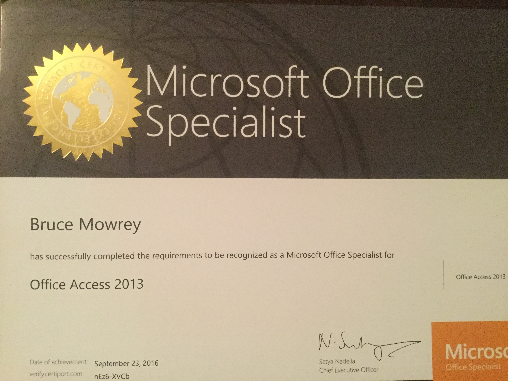

Employment History
- * Employed by UMC EMS from June 1984 until August 2016.
- * Field Paramedic from June 1884 until January 1993.
- * EMS Shift Chief from January 1993 until September 2009.
- * EMS Division Chief from September 2009 until August 2016.
- * As EMS Division Chief responsible for IT, QI, and Training Department.

IT accomplishments
- * A+ Certified, Microsoft Access 2013 Specialist Certified..
- * 20+ years experience using Microsoft Access.
- * 7 years experience using Crystal Reports.
- * Developed patient care reporting application utilized by over 30 EMS agencies for 10 years..
- * In year 2000 recognized by Texas Department of Health EMS Division as an approved EMS software vender.

Full-Stack Accomplishments
Currently enrolled in SMU’s Full Stack Coding Boot Camp. Links will be added to deployed portfolio of work samples.